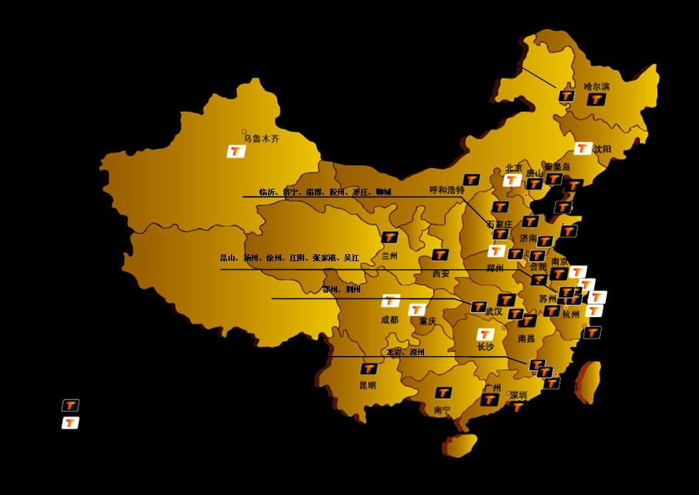

重点城市全线覆盖，媒体价值强势凸显短短数年之间，世通华纳已完成了对全国重点城市的全线覆盖，完善了公交移动电视的全国联播网络，获得了真正意义上的全国同步精准传播效果，媒体的价值得到强势的凸显。自有资源：广州、深圳、杭州、青岛、烟台、济南、厦门、南京、武汉、大连、合肥、苏州、石家庄、温州、西安、哈尔滨、昆明。代理城市： 重庆、天津、广东（深圳（广电）、东莞、惠州、新会、清远、开平）、山东（聊城、淄博、临沂、枣庄、济宁、胶州、东营、日照、威海、菏泽、寿光）、浙江（义乌、台州、绍兴、嘉兴、金华、瑞安、湖州、丽水）、江苏（扬州、徐州、江阴、张家港、昆山、吴江、连云港、南通）、福建（福州、泉州、漳州、龙岩）、东北及华北地区（唐山、本溪、鞍山、齐齐哈尔）、西北地区（银川、呼和浩特、乌鲁木齐）、安徽（马鞍山、铜陵）、云南（大理、曲靖、丽江）、湖北（荆州、鄂州、宜昌）、广西（南宁、柳州）。 合作城市：北京、上海、沈阳、长沙、南昌、常州、无锡

自主运维的稳定平台，高质刊播的完美保障。
世通华纳自有运维队伍及车载数字电视研发团队，在“公交车载多媒体播放监控系统”、“车载国标数字电视机顶盒”、“公交车载多媒体无线信息发布系统”、“过压欠压保护电路”、“盲点检测自适应电路”、“开机延时电路”、“音量感应自动调节器”等实现了技术创新，能适时找到信号盲点并反馈，确保播出稳定，保证节目与广告的刊播质量。
文章来源：世通华纳
发表时间：2009-07-30
世通华纳自有运维队伍及车载数字电视研发团队，在“公交车载多媒体播放监控系统”、“车载国标数字电视机顶盒”、“公交车载多媒体无线信息发布系统”、“过压欠压保护电路”、“盲点检测自适应电路”、“开机延时电路”、“音量感应自动调节器”等实现了技术创新，能适时找到信号盲点并反馈，确保播出稳定，保证节目与广告的刊播质量。
文章来源：赛迪网
发表时间：2009-03-16
【赛迪网讯】3月13日消息，国内最大的公交移动电视运营商世通华纳不仅在资源覆盖上占据绝对优势，在内容上拥有强大的制作能力，在技术创新上也具备了雄厚实力。最早采用了先进的无线传输技术，可以做到节目每日更新，实时收看，实现了随时随地，边走边看电视的功能。丰富了公交受众的途中生活，为数亿市民带来了超值视听享受。 据了解，无线传输指的是通过无线发射数字信号，地面设备接收的方法来传播电视节目。也就是说，在公交车上装上能接收无线信号的机器，就可以在乘车过程中收看到内容丰富的节目。 无线传输是目前比较先进的技术，目前国际上通用的标准是欧洲1976年推出的DVB-T标准。它的最大特点是稳定清晰，在时速不超过120公里/小时的公交车、地铁、出租车上都能收到信号。经过多年的投入使用，它的稳定性和清晰度都很高，技术已经非常成熟。 在国内主要存在三大标准，一是清华大学的DMB—T技术；二是上海交通大学的ADTB—T技术；另外则是2006年综合这几种技术优势推出的国家标准DMB-TH，国标在从2007年8月1日起正式实施，目前在逐步普及中。 目前这些标准都在应用中。世通华纳一直紧跟先进技术潮流，和各地广电部门紧密合作，最早采用的是欧洲标准DVB-T，在部分城市中也采用了比较成熟的清华大学的DMB—T技术和目前正大力推行的国家标准。由此实现了对全国主流城市的无缝隙全城覆盖和全程覆盖，从而实现了节目的实时更新，最大限度避免了传播过程中的信息损耗；保证了受众行进途中的收视效果；保障了广告主对于传播收视率的极致追求。 在世通华纳运营的公交车上，乘客可以收看到当地广电提供的多档精彩节目内容。如在西安，您可以收看到来自中央电视台和西安电视台的新闻节目，如08奥运开闭幕式等重大活动；同时，也能看到世通华纳根据公交人群收视特点制作的短剧《身边的故事》、《闪动巅峰》、《先下后上》；以及《移动生活》、《财经一点通》、《电影生活》等生活服务类、文化娱乐类节目。 无线传输技术的使用催生了种类繁多的移动新媒体，公交移动电视应运而生，它的出现丰富了居民的生活，给数亿市民带来了极大的视听享受，使出行不再枯燥无味，也为市民提供了接收信息的方便途径。现在在公交车上收看画面清晰、音量适中、内容丰富多彩的电视节目已经成为大多数市民的生活习惯。 http://news.ccidnet.com/art/945/20090313/1708477_1.html
文章来源：towona
发表时间：2008-01-07
车载移动电视硬件平台运行稳定
文章来源：towona
发表时间：2008-01-07
地面信号广播传输技术
文章来源：towona
发表时间：2008-01-07
公交车载多媒体播放监控系统